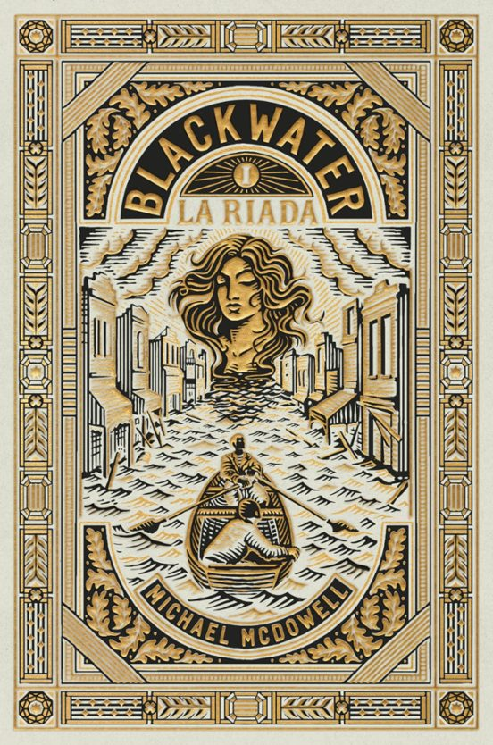
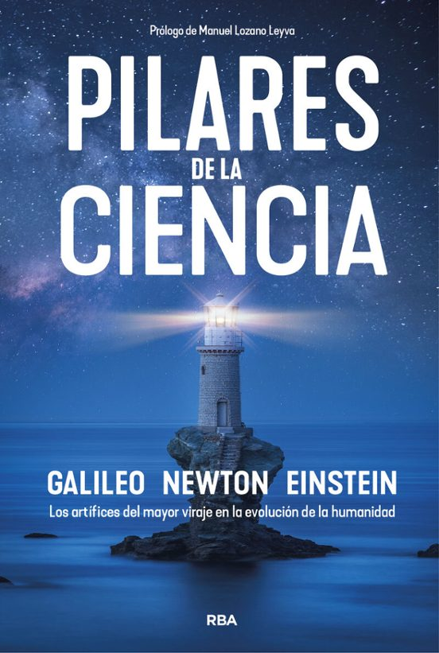
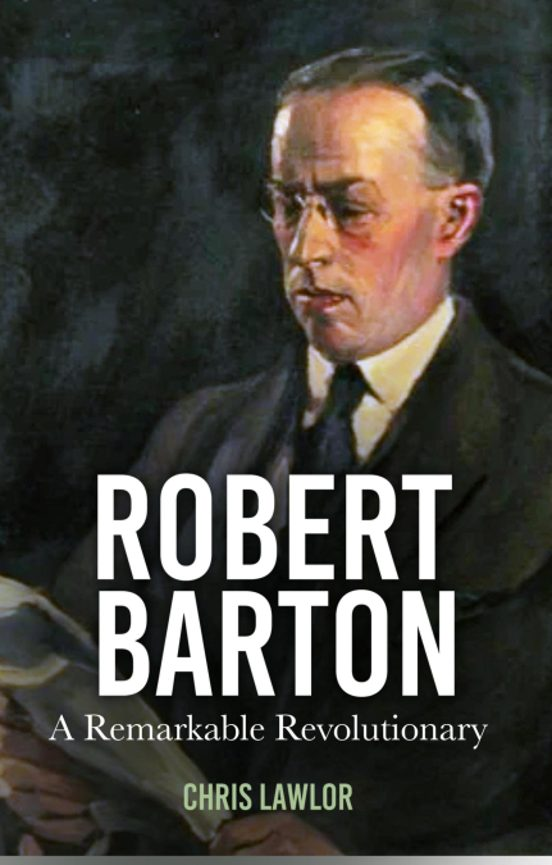

Fecha:03/03/2021
Categoría: Ficcion

La Isla de la Mujer Dormida es una novela de intriga y misterio que nos lleva a una isla envuelta en leyendas y secretos oscuros. La historia sigue a un grupo de personajes que llegan a esta isla solitaria, atraídos por su enigmática
historia, en la cual se dice que yace una mujer dormida que guarda un secreto milenario. A medida que exploran, comienzan a descubrir conexiones entre sus propias vidas y los mitos de la isla, enfrentándose a sus miedos y a un pasado
enterrado que amenaza con resurgir. La atmósfera cargada de suspenso y los giros inesperados mantienen al lector cautivado, explorando temas de misterio, leyenda, y el poder de la naturaleza y la memoria.
Fecha:01/01/1980
Categoría: Biografia
Presentamos la primera biografía de George Orwell traducida del ruso, en la que se incorporan nuevos documentos de archivo y una perspectiva única sobre la vida y obra de Orwell. En esta obra, Yuri Felshtinsky ofrece un análisis detallado
de las novelas, ensayos, artículos y cartas del emblemático autor del siglo xx, y pone especial enfasis en su impacto en la literatura y la política mundial. Prestando especial atención a los matices ruso-sovieticos de su obra, esa biografía
ofrece una comprensión más profunda de su proceso creativo y sus relaciones personales y profesionales.
Fecha:10/05/2022
Categoría: Cientifico
El Secreto de la Vida de Howard Markel es un libro que explora el impacto de la medicina y la ciencia en la vida humana a lo largo de la historia. En esta obra, Markel, un historiador médico, aborda cómo los avances médicos y las
innovaciones científicas han transformado nuestra comprensión de la salud, la enfermedad y la mortalidad. A lo largo del libro, se examinan figuras clave de la historia de la medicina y sus descubrimientos, que a menudo fueron revolucionarios
para la época. El autor también reflexiona sobre las lecciones que la ciencia ha aprendido sobre el cuerpo humano, los límites de la medicina, y cómo nuestras concepciones sobre la vida y la muerte han cambiado a lo largo de los siglos.
Fecha:01/01/1983
Categoría: Ficcion

Blackwater I. La Riada es la primera entrega de una serie de novelas escrita por Michael McDowell. La historia arranca en el pequeño pueblo de Perdido, Alabama, cuando una terrible inundación saca a la superficie mucho más que agua
desbordada. En medio de la catástrofe, aparece Elinor Dammert, una misteriosa mujer que se convierte en el centro de una compleja saga familiar. Elinor se infiltra en la poderosa familia Caskey y desencadena tensiones que revelan
oscuros secretos. Con una mezcla de terror y drama sureño, esta novela explora el misterio y los conflictos familiares en un ambiente lleno de suspense, mientras sus personajes se ven afectados por la presencia inquietante de Elinor
y la influencia de fuerzas sobrenaturales.
Fecha:16/10/2018
Categoría: Ciencia

Entre los científicos más prominentes de la historia, Galileo, Newton y Einstein ocupan sin duda un lugar singularmente destacado. A los tres se les considera genios sobresalientes y los tres fueron capaces de hacer avanzar la ciencia a pasos
agigantados. En este libro se explican sus grandes logros de manera que el lector, sea cual sea su formación, podrá apreciar todo lo que la ciencia actual, mucho más allá de la física y las matemáticas, le debe a cada uno de ellos. Con sus
virtudes y sus defectos, sus limitaciones y sus errores, la magna contribución al conocimiento científico de Galileo, Newton y Einstein despierta admiración e interés, y las vicisitudes de sus vidas, en el contexto de sus circunstancias
históricas, nos ayudan a entender la humanidad de cada uno de ellos. Explicar todo ello con acierto, amenidad y rigor es, justamente, el propósito de este libro.
Fecha:23/05/2007
Categoría: Misterio
Millie, una ex convicta, se convierte en asistente de una familia adinerada en Long Island, buscando un nuevo comienzo. Sin embargo, pronto descubre que su vida perfecta oculta oscuros secretos. A medida que se adentra en su mundo, se enfrenta a
peligros que amenazan su seguridad y futuro. La novela explora temas de desesperación y las apariencias engañosas, manteniendo a los lectores en vilo con giros inesperados. Es el primer libro de una trilogía exitosa.
Fecha:21/11/2024
Categoría: Misterio
La novela sigue la historia de una mujer que, tras sufrir un accidente automovilístico, se encuentra en una situación complicada. A medida que se recupera, comienza a descubrir secretos oscuros sobre su vida y su entorno. La protagonista lucha con
sus propios demonios mientras intenta reconstruir su vida, enfrentándose a traiciones y revelaciones impactantes. La narrativa está llena de giros inesperados y tensión, explorando temas de identidad, confianza y la lucha por la verdad. Es un
thriller psicológico que mantiene a los lectores intrigados hasta el final.
Fecha:29/9/2022
Categoría: Comedia
"Navidad en Lobster Bay" es una novela romántica que sigue a Emma y Aidan, quienes se unen para expandir la hospedería de Lobster Bay. A medida que trabajan juntos, enfrentan desafíos y malentendidos, pero también descubren una conexión especial.
La historia explora temas de amor, superación personal y el espíritu navideño, todo ambientado en un encantador pueblo costero. Es una lectura ideal para disfrutar durante la temporada festiva.
Fecha:26/09/2017
Categoría: Biografia

El enigmático Robert Barton fue una figura central en la Revolución irlandesa. De ascendencia angloirlandesa, se unió al ejército británico en 1915. Fue enviado a Dublín para vigilar a los prisioneros republicanos después del Levantamiento
de Pascua de 1916. En dos años experimentó una conversión política y se unió al Sinn Féin. Fue elegido miembro del Dáil y encarcelado durante la Guerra de la Independencia, pero fue liberado para ayudar a negociar la tregua que puso fin al
conflicto. Fue miembro de las dos delegaciones irlandesas a Londres en 1921 y fue uno de los plenipotenciarios que firmaron a regañadientes el tratado angloirlandés en diciembre. Votó a favor del tratado a nivel de Gabinete y Dáil, pero
cuando lo hizo, cambió su lealtad al lado contrario al tratado en la Guerra Civil, durante la cual fue encarcelado nuevamente.